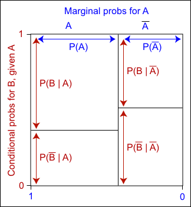

The definitions of the conditional probabilities \(P(A \mid B)\) and \(P(B \mid A)\) can be rewritten as
\[ P(A \textbf { and } B) \;=\; P(A \mid B) \times P(B) \;=\; P(B \mid A) \times P(A) \]\(P(A)\) and \(P(B)\) are called marginal probabilities for A and B, whereas \(P(A \textbf { and } B)\) is called their joint probability.
Proportional Venn diagram
The marginal and conditional probabilities can be displayed graphically with a Venn diagram in which one margin is partitioned using the marginal probabilities for \(A\) and the slices are split using the conditional probabilities for \(B\) given \(A\).

Since each area is the product of a marginal probability and the corresponding conditional probability,
The area of any rectangle in the diagram equals the joint probability of the row and column events.
Alternatively, the unit square can be split into horizontal strips using the marginal probabilities for \(B\), then vertically using the conditional probabilities for \(A\) given \(B\). The areas of the resulting rectangles are again equal to the joint probabilities, so the two diagrams are just rearrangements of the same areas.